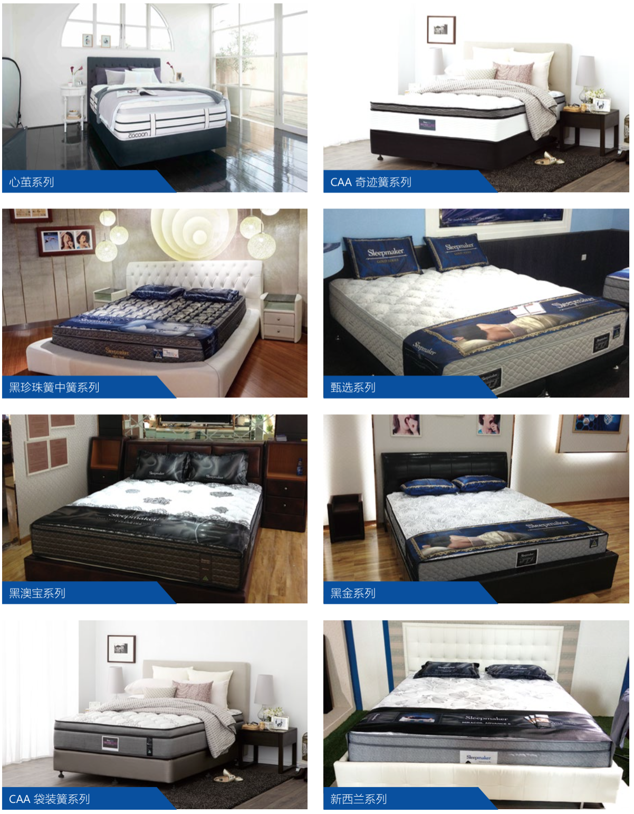

Sleepmaker
澳洲造梦者床垫
来自澳洲的传“觉”士
——Sleepmaker 造梦者
Sleepmaker享誉世界的知名床垫品牌，发源于澳洲，中文译为造梦者，拥有超过150年的悠久历史，其母公司The Comfort Group康福得集团旗下运营多个世界知名寝具品牌，是世界上屈指可数的大型床垫和梦幻泡棉生产企业之一，在澳洲和新西兰拥有整合后的七家大型现代化工厂和庞大的零售网络，当地市场占有率处于领先地位。Sleepmaker还是悉尼2000年全球超级体坛盛会的唯一指定床具供应商和众多五星级豪华酒店集团的合作品牌。
造梦者广泛生产，供给和使用代表新西兰最高环保工艺的Dreamfoam梦幻泡棉垫层材料，这是目前床垫行业中最先进的环保科技之一，曾获得2010年新西兰“绿丝带环保制造奖”。新西兰每年于世界环境日当天颁发绿丝带奖，以表彰对新西兰环保事业做出杰出贡献的个人，机构，企业和社区，由国家环境部长亲自颁奖。

Sleepmaker 造梦者
带给国人原汁原味的澳洲床垫
在如今的中国家居市场普遍低迷和假洋牌到处泛滥的状况下，Sleepmaker造梦者品牌并不想随波逐流，而是坚定地恪守自身的职业操守和经营理念，旗帜鲜明地反对任何挂羊头卖狗肉的假洋牌现象，积极投入到教育市场和引导消费者选择真正国外优质货品的方向上来，通过各种媒体报道和店面宣传渠道，提出了目前中国市场上进口商品领域最严格的承诺，即一针一线都不在中国境内组装的原产地原装进口床垫品牌，既满足了品牌所属原产地出产的原汁原味品质，又消除了消费者对目前同一品牌不同产地尴尬情况的担心，特别是为行业自律和重建家居业日渐衰落的商业信誉和诚心秩序做出力所能及的贡献。
Sleepmaker集世界顶尖床垫制造技术之大成，凭借澳洲在原材料上的绿色环保高标准和制造工艺上的国际领先水平，创造出超一流的舒适和无以伦比的耐用性而赢得了卓越的声誉，引领着优质床具行业的发展方向。在澳洲，人们已经有了超过100年的舒适睡眠享受，Sleepmaker致力于提供相同的睡眠经验带给中国的消费者，我们相信，在不久的将来，Sleepmaker将成为国内最具权威性的高端床垫品牌之一，以专业的服务和最为优质的产品带给您一个更完美的睡眠空间。
sleepmaker 造梦者各大系列产品
